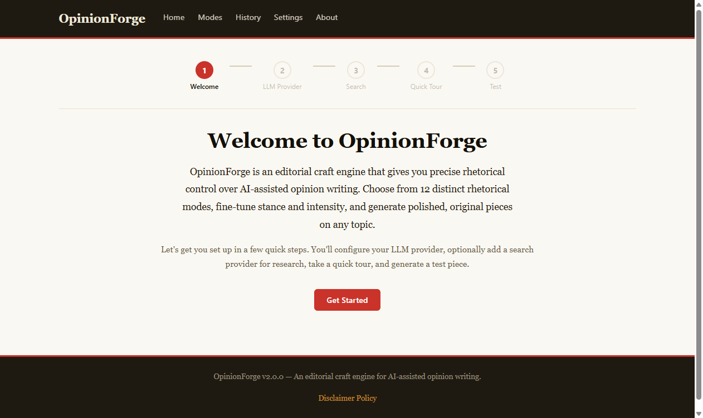
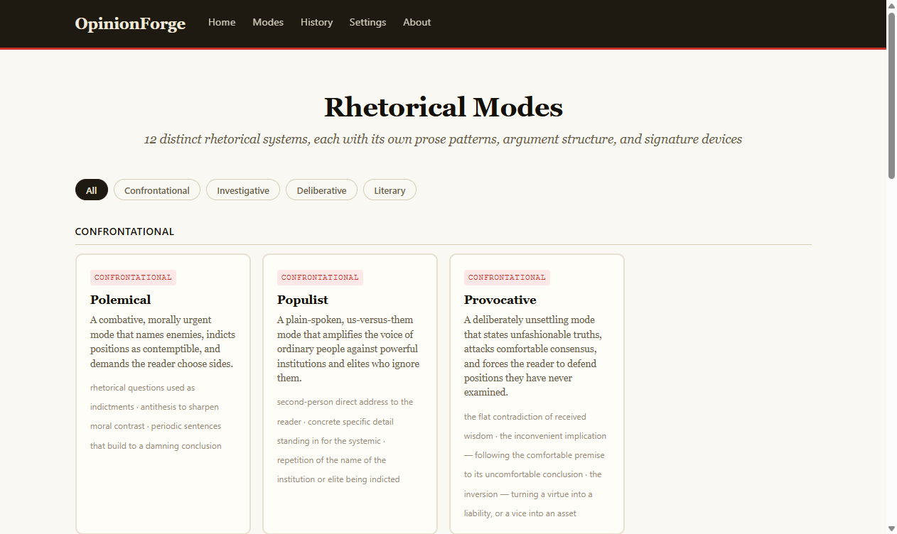
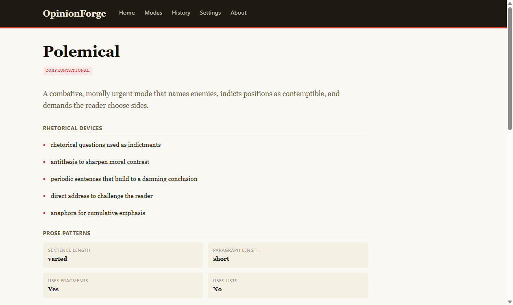
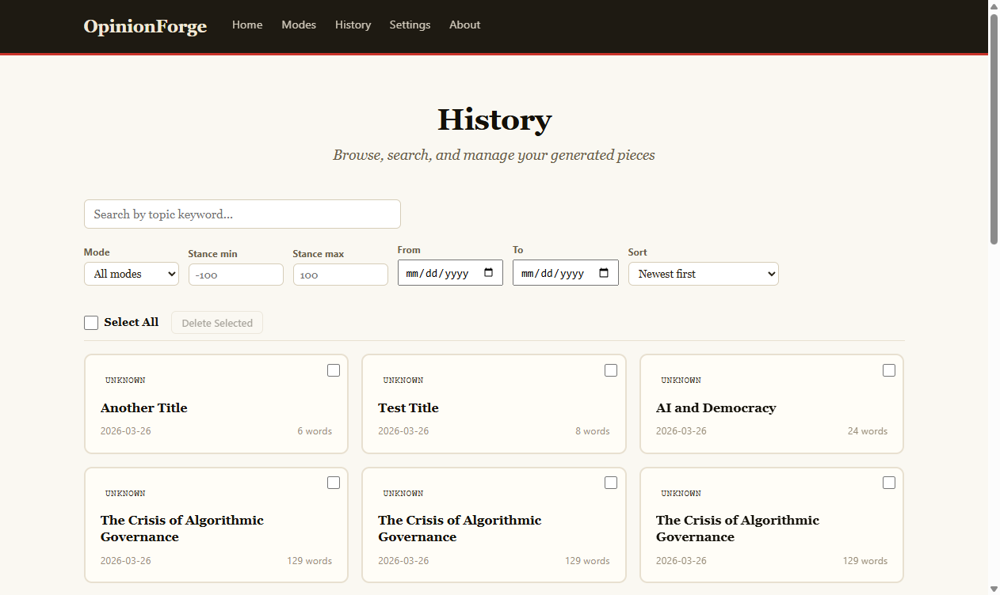
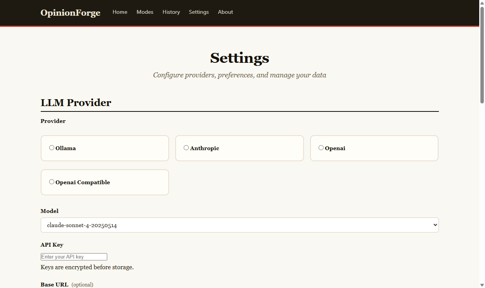

A local desktop editorial craft engine for AI-assisted opinion writing
OpinionForge is a local desktop application for generating publication-ready opinion pieces — op-eds, columns, and long-form opinion content — with precise rhetorical control. Install it, open it in your browser, and write. No account. No subscription. No server to maintain.
You control three dimensions of every piece:
Bring your own LLM — Ollama for free local generation, or Claude/GPT-4o via API. OpinionForge provides the rhetorical intelligence; your LLM provides the words.
opinionforge serve
Open http://127.0.0.1:8000 in your browser. That's it.
First launch walks you through a guided setup: choose your LLM provider, enter an API key (or select Ollama for free local use), set your defaults, and generate a test piece — all in the browser.
OpinionForge runs as a local web application. Everything happens in your browser — no terminal required after the initial launch.
First launch walks you through a guided 5-step wizard: choose your LLM provider, enter an API key (or select Ollama for free local use), configure search, take a quick tour, and generate a test piece. From install to first piece in under 5 minutes.

The onboarding wizard guides you through provider setup in 5 steps
Browse all 12 rhetorical modes with full descriptions, signature devices, and prose patterns. Filter by category — Confrontational, Investigative, Deliberative, Literary. Click any mode to see its complete profile with rhetorical devices, sentence structure, and paragraph patterns.

Browse and filter all 12 rhetorical modes by category
Each mode has a full profile page showing its rhetorical devices, prose patterns (sentence length, paragraph style, vocabulary register), and a complete description of the argumentative approach.

Full profile for the Polemical mode — rhetorical devices, prose patterns, and more
Every piece is saved automatically to a local SQLite database. Search by keyword, filter by mode, stance range, or date. Bulk select and delete. Click any piece to re-read it or re-export to a different platform format.

Search, filter, and manage your entire library of generated pieces
Configure your LLM provider and model, enter API keys (encrypted at rest), set up a search provider for source research, and customize your defaults — mode, stance, intensity, length, and theme. Test connections directly from the settings page.

Configure providers, models, and preferences — all from the browser
OpinionForge is provider-agnostic. Use whatever LLM you already have:
| Provider | Cost | Setup |
|---|---|---|
| Ollama (local) | Free | Install Ollama, pull a model, select in settings |
| Anthropic (Claude) | Per-token | Enter API key in settings |
| OpenAI (GPT-4o) | Per-token | Enter API key in settings |
| OpenAI-compatible | Varies | Enter API key + base URL in settings |
Switch providers at any time from the Settings page or via CLI flags. All providers use the same rhetorical mode system — the modes control the argument structure and prose style regardless of which LLM generates the text.
Each mode is a self-contained rhetorical system with its own prose patterns, argument structure, and signature devices.
Combative moral urgency. Names targets, indicts positions, demands the reader choose sides.
Plain-spoken, us-versus-them. Amplifies ordinary voices against remote, impersonal power.
Deliberately unsettling. States unfashionable truths and forces readers to face uncomfortable implications.
Evidence-first. Assembles documentary proof, follows the money, builds a prosecutorial case.
Quantitative. Leads with numbers, visualizes trends, anchors every claim in empirical precision.
Rigorous, evidence-first. Breaks complex issues into parts and arrives at measured conclusions.
Thesis-antithesis-synthesis. Takes opposing arguments seriously and arrives at positions through genuine engagement.
Calm, earned authority. Conveys confidence through restraint and precision.
Irony, exaggeration, comic incongruity. The argument is made by letting the target's logic destroy itself.
Grand, elevated. Deploys the full arsenal of classical rhetoric — anaphora, periodic sentences, tricolon.
Story-first. Uses scene, character, and testimony to make abstract arguments vivid and emotionally resonant.
Compressed, epigrammatic. Delivers argument through maxims and paradoxes. Every word carries maximum weight.
Everything is stored locally in a SQLite database on your machine. No cloud. No telemetry. No account.
pip install opinionforge[desktop] opinionforge desktop
Launches a system tray icon with one-click access to start and stop the web server, open the browser, and quit the application. Runs in the background until you close it.
Everything in the web UI is also available from the command line:
# Generate a piece opinionforge write "The rise of algorithmic governance" --mode polemical # Specify provider and model opinionforge write "Local journalism" --provider ollama --model llama3 # Blend two modes opinionforge write "Tech regulation" --mode satirical:60,forensic:40 # Export to Substack opinionforge write "The attention economy" --mode analytical --export substack
Every piece generated by OpinionForge includes a mandatory disclaimer that cannot be suppressed:
This piece was generated with AI-assisted rhetorical controls. It is original content and is not written by, endorsed by, or affiliated with any real person.
This is by design. OpinionForge generates original AI content with a defined rhetorical character. Readers deserve to know what they are reading.